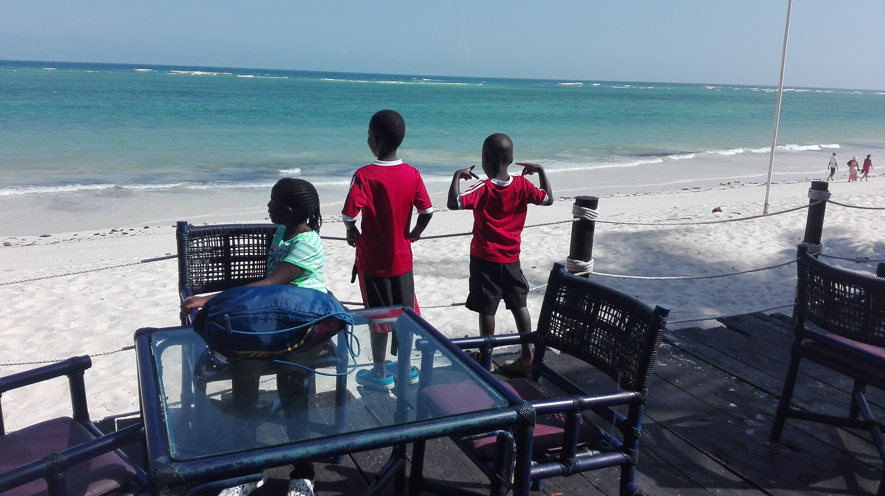

Morning
It was a sunny morning.I prepared my self to go to Mombasa with my father,Brother Malli and my cousin Sharon.My father,Malli and Sharon woke up,prepaired themself and then my Father Uber an Uber taxi to Jomo Kenyata International Airport.When we reached the Airport,we saw many aeroplanes in the Airport.We got our tickets and went to the Aeroplane.The Aeroplane was called Jambo Jet.
Then we took of.The plane was very conftable.Then I felt hungry.Lukily my mother pucked some fruits.I ate some bananas and an apple.We landed after 48 minutes.Then my Father uber a uber taxi came to pick us from the Aeroplane to the hotel.
Afternoon
After we reached the hotel we waited for our key to the room.Then I and found the beach and the swimming pool.I was happyy as a king.I went to tell my father and then we wore our swimming costume and then we went to the swimming pool.When they got the key of our room, they After 4 oclock.
Then we went to the ocean.In the ocean some waves were small and other wones are huge.We like the big ones becoause we dive and make you to move faster.It was time to go home

In the Afternoon you can it lunch at lunch time,playing or swimming inthe swimming pool .You can go to play in the beach and relax.Many children play in the swimming pool.When it reaches 4 oclock.You can go to the ocean because was are on the shallow sides so you can enjoy watching the waves or going to the waves.You can stay in the swimming pool or go to have a snack.
Evening
When we reached home we were shocked to see our bags were there.Our Dad told us the people of the hotel took the bags in the room.We went to shower,change and went to at supper. After we went to the ocean we went to shower,change and then we went to the restorant to eat supper.There were so many things to chose.I chose so many things.When everyone was full.We went home to watch TV.